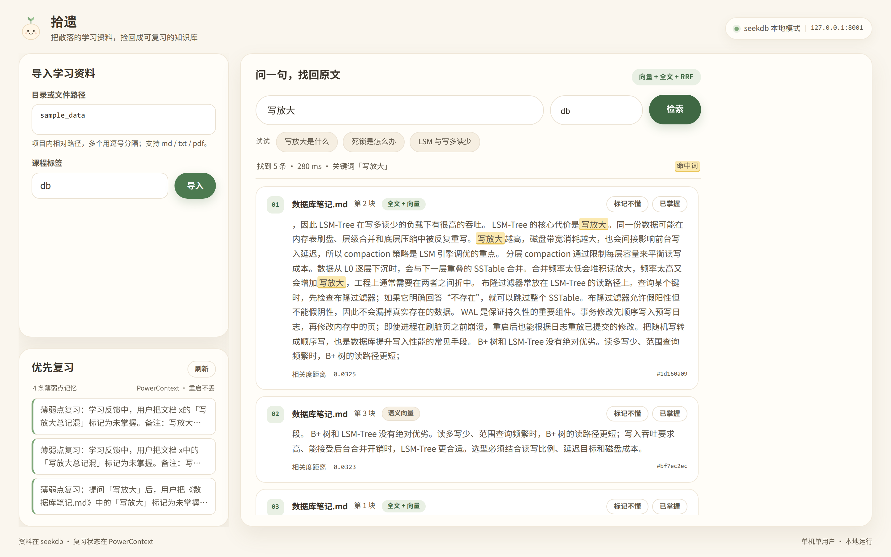

数据库笔记.md
第 2 块
全文 + 向量
同一个数据可能在内存表刷盘、层级合并和底层压缩中被反复重写。写放大越高，磁盘带宽消耗越大。
相关度距离0.0325
标记不懂已掌握
同一个数据可能在内存表刷盘、层级合并和底层压缩中被反复重写。写放大越高，磁盘带宽消耗越大。
问一句，找回原文与出处；标记一次，下次先复习。
答案在某个 PDF 或笔记里，却只能一页页翻，出处也留不下。
seekdb 混合检索，把原文、文件名、块号一起带回来。
上次卡住的地方没有记录，重启一次就从头开始。
PowerContext 记住薄弱点，下次打开先提醒。
PDF、Markdown、TXT 解析、切块写入本地 seekdb，保留文件名与位置。
500 字切块 · 重复导入覆盖旧片段
向量语义与全文关键词同时召回，RRF 融合排序，结果带出处和距离。
向量 + $contains + 课程过滤
标记「不懂 / 已掌握」写入 PowerContext，下次打开先召回薄弱点。
固定 scope · 重启不丢

RRF 融合排序 · 落盘 ./data/seekdb
scope=studydesk · SQLite 持久化，重启不丢
应用只做编排，不另建影子库。
发布后补充：站点访问、试用反馈、复习提效。不预填虚构指标。